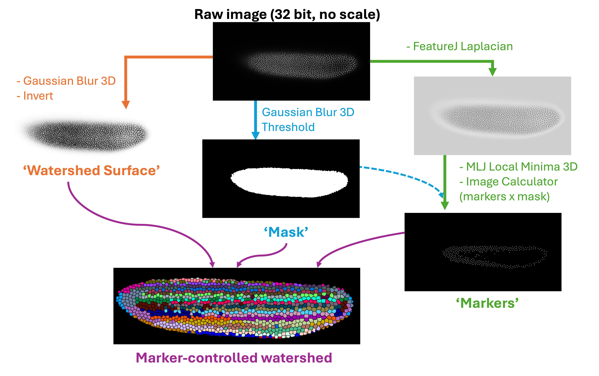
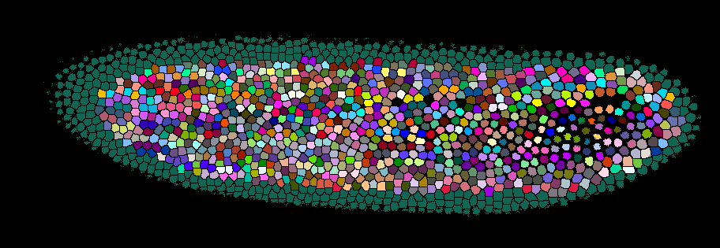

3D Image Analysis#
Lab authors: Hunter Elliott, Damian Dalle Nogare, Florian Jug, and Esteban Miglietta .
This file last updated 2026-04-15.
Learning Objectives#
Visualizing 3D data in Fiji
Basic segmentation on 3D images
Image registration for 3D reconstruction
Some ways to segment in 3D
Lab Data in this folder (3D_Image_Analysis)
Important
Remember to unzip the data folder after downloading.
Visualizing 3D data in Fiji#
Open Fiji
Load
Drosophila_zstack-20x-medium.tif, this is a 3-channel, 3D volume. The default visualization shows one z-plane and one channel at a time. There are a few other ways to visualize 3D data, some of which are listed below. Try them out, and see what are their advantages and disadvantages.Orthogonal Views. Go to
Image > Stacks > Orthogonal Views. What are we seeing here? Can you understand what each window shows you? In which view is easiest to see the separation between nuclei? Why might that be?
BigVolumeBrowser is a relatively new 3D volume visualization and rendering tool.
If it’s not installed in your Fiji, go to
Help > Update > Manage update sites, search forBigVolumeBrowserand activate the checkbox. ClickApply and closeand thenApply changes. You’ll need to restart Fiji.You can open it by going to
Plugins > BigVolumeViewer 0.1.0You wil be prompted to set the 3D rendering parameters. You can learn more about them here, but for this exercise, the deafult settings are enough.
Play around a bit, rotate the volume, change a few viewing options… enjoy!
Click on the Fiji logo, under the “Add volumes” menu on the right to load the active image from Fiji.
You can control visibility of the layers in the
Sourcesmenu and their rendering in theSources rendermenu on the right.The
Viewmenu contains tools to change the view of the volume.
BigDataViewer. BDV is a “re-slicing” viewer that is included with Fiji.
Uou can view your stack in BigDataViewer by going to
Plugins > BigDataViewer > open current image. What might be the pros and cons of viewing images like this compared to a 3D view like in BigVolumeViewer?If you want to know more about it, you can find the full documentation for this tool here.
Do you see anything suspicious about the intensity values in this image when you rotate it in BDV? If so, can you think of some possible explanations for this?
Registration for 3D Volume Reconstruction#
Open the
mouse_brain_sections_downsampled32x_arpy.ome.tifstack. You’ve seen a single tissue section from this brain before, but now we’re going to try to visualize the entire brain.Visualize this stack in in some way. This should look like most of a mouse brain but likely appears “squished”. Why? Look at the voxel dimensions - the actual voxel size in this image is (x,y,z) = (10.5,10.5,40) microns - adjust the voxel size (find out how if you don’t know) and try again! Remember the discussion of voxel size calibration.
Notice the misalignment between the tissue sections - this gives the brain a rough outline. You can also see this by scrolling through the image stack with the ImageJ viewer. We can fix this!
Duplicate the original image stack. We will apply a stack registration to this duplicated stack. The plugin we will utilize will use the currently selected slice in the currently selected stack as a reference to register all the other slices, so scroll to a slice you think would serve as a good reference. If StackReg is not installed, got to Help>Updates>Manage Update Sites and add ‘BIG-EPFL’ to the list of update sites, then update and restart Fiji. StackReg was designed to work on single channel images, so you will first need to split your your image (Image>Color>Split Chanels)
Now, go to
Plugins > StackReg. What kind of transform do you think is best to align all these slices? Select it and then click OK. Be patient - it will take some time to finish.Now visualize the registered stack and compare it to the original. Does it look better? What might be necessary to further improve the registration?
3D Object Segmentation, Shape and Intensity Measurements#
Hint
We’ll use two plugin suites for this exercise: MorphoLibJ and FeatureJ, if they are not installed already in your Fiji, install them by activating the IJPB-plugins and ImageScience plugin sites in Help > Update > Manage update sites. You will have to restart Fiji.
Close all secondary Fiji windows and reload
Drosophila_zstack-20x-medium.tif.We are going to segment the nuclei of this 3D volume via 3D marker-controlled watershed. As with the seeded watershed approach in 2D, we’ll need 3 “images”: marker, watershed surface, and mask. We will get all three images from the same channel: channel 2.
Hint
Here's a visual summary of the analysis workflow to guide you:
{kind=link}

Split the three channels by going to
Image > Color > Split Channels. Close all but the second channel, which corresponds to nuclei.Change the image type to 32-bit (
Image > Type > 32-bit).
Create 3 copies of the stack (via
Image > Duplicate), naming them “surface”, “mask”, and “marker”. (Make sure the “duplicate stack” option is checked.)Watershed surface. Select the “surface” image. We can use the inverted nuclei channel as watershed surface (remember the watershed algorithm floods a surface from dark to bright areas).
To make the segmentation smoother, however, we need to blur the image a bit. This is done via
Process > Filters > Gaussian Blur 3D.Notice that now there are 3 sigmas to set, one for each dimension, and that they are in ‘voxel’ units, not microns. Should the 3 sigmas be the same?
To answer this, go to
Image > Propertiesand check the voxel size in x,y, and z.Now go to
Process > Filters > Gaussian Blur 3D. Choose an appropriate sigma, and apply the filter. Visualize the result in 3D. Try other sigmas (appropriately scaled) if necessary.
Now invert the image:
Edit > Invert. This is the watershed surface.To clean up your workspace, save this image (
File > Save as > Tiff) and close it.
Mask. This will restrict the area into which the watershed regions will grow. It can be obtained by thresholding a blurred version of the nuclei image, where the sigmas are a bit larger than the ones used above.
Select the “mask” image.
Apply a 3D gaussian filter (
Process > Filters > Gaussian Blur 3D), with sigma a bit larger (say 50% larger) than the one used above.Threshold the result (
Image > Adjust > Threshold). Choose a threshold such that the resulting mask contains all the nuclei, then click Apply. If prompted, click Convert to Mask.To clean up your workspace, save the result (
File > Save as > Tiff) and close it.
Marker. To find markers, we will treat the nuclei as “point sources”, and detect them by finding local maxima in a Laplacian of Gaussian image.
Select the “marker” image.
Go to
Plugins > FeatureJ > FeatureJ Laplacian, adjust the smoothing scale (don’t forget about the voxel calibration!), and click OK. We want to detect nuclei, so what should we measure to determine this sigma?Candidates for markers are the local minima in the resulting filtered image. To find them, go to
Plugins > MorphoLibJ > Minima and Maxima > Regional Min & Max 3D. Select Regional Minima with Connectivity 26 and click OK.What do you think? Too many point sources in the background? We can filter them using our previously computed mask.
Load the “mask” image by dragging it into Fiji. Now go to
Process > Image Calculator. And multiply the mask by the image with point sources. Save the result as “marker”.
Watershed. Now we will use all previously calculated images to perform the 3D instance segmentation.
Close all secondary windows and load the “surface”, “mask”, and “marker” images.
Go to
Plugins > MorphoLibJ > Segmentation > Marker-Controlled Watershed.Set Input, Marker, and Mask appropriately. Check all checkboxes and click OK.
Tip
You can add cool colors to your segmentation by chooosing a LUT in Image>Lookup Tables. Try ‘Glasbey on Dark’
Bonus: Can you overlay the original image and watershed segmentation to visualize them simultaneously in 3D?
question
You had to make some decisions on parameters and if anything is off, things might not turn out very convincing. How well did this work for you? Below a screenshot of one result we got… is your result comparable?

Shape Measurements. Select the watershed image. Go to
Plugins > MorphoLibJ > Analyse > Analyze Regions 3D. Select the desired shape measurements and click OK.Intensity Measurements. Go to
Plugins > MorphoLibJ > Analyze > Intensity Measurements 2D/3D. Which image should you set as “Input”? Which as “Labels”? Check the desired measurements and click OK.
3D Crop#
This is useful if the data size is big and you want to rapidly test your analysis options before applying them to the larger set.
Re-open the image you’ve been working with. Go to
Image > Color > Split Channels. Select channel 2. Go toPlugins > Stacks > Crop (3D). Check “Three pane view” and uncheck “Change origin”. Click Ok. In the Crop Options window, check all options under “Also crop these images”. Set the bounding boxes as desired, click onSet from fields aboveand clickCrop.Merge the resulting channels (
Image > Color > Merge Channels), and visualize the result in 3D if interested.
3D Pixel Classifier Choose-your-own-adventure#
The goal here is to use machine learning to attempt to segment closely spaced nuclei. You have two options for how to proceed. For example, ilastik or Labkit. If you have time, try both!
Labkit#
Labkit can also perform 3D segmentation with a random forest pixel classifier, and it lets you work right in Fiji, which must feel like home at this point. It visualizes the data with BigDataViewer which you used earlier and can handle very large datasets.
This step is not needed on the course computers, but on a new machine, you can install Labkit by going to
Help > Updateand add the “Labkit” update site, and restart Fiji.Open
drosophilus_floriansus.tifand then go toPlugins > Labkit > Open current image. You can access more options for viewing the data by clicking “settings” in the upper left corner.After you’ve annotated a few areas of foreground and background, in the lower left “Segmentation” box you’ll need to select the pixel classifier and click the
▶button to train the model and see the current result.To handle large datasets, the dataset is broken up into blocks and Labkit only makes predictions on the currently visible blocks. When your done, if you want to export the entire segmentation, click the drop-down arrow next to the pixel classifier in the lower left window - there you’ll see options to segment the entire dataset and save the result.
ilastik#
Open
drosophilus_floriansus.tif. If you want to keep things simple you can select a few crops in a small area containing a few dozen nuclei. Export the image to .tiff usingFile > Save as > .tiff.
Tip
You can navigate the slides using Ctrl + Up/Down arrows
Create a new pixel classification project in ilastik and load in the .tiff stack. Train a model that highlights the nuclei. What classes should you label? What output of the model should you use as watershed surface?
When you’re done, try loading the result into Fiji or napari and look at the result!
Are we happy with these results?#
Are your nuclei all perfectly separated? If not, what method have you learned that might help you split them? What output of the model would you use to do that?
Have you learned about other machine learning approaches that might handle closely spaced nuclei better? What are they and what are their pros and cons relative to this approach?
Once you’re happy with your result, export the segmentation and overlay it with the raw data as a composite image. Then visualize it with your favorite 3D visualization tool from earlier in the lab.
3D instance segmentation#
CellPose#
We have seen in the lecture that CellPose, a 2D segmentation approach, can segment 3D data by segmenting orthogonal 2D slides and merging them into a consensus 3D segmentation. Interesting! Let’s try! In tomorrow’s deep learing lab, we will use cellpose more extensively, including fine-tuning a model to work better on our data. But for today, we will just use the default model.
Cellpose is a python based program. We will use python and conda more tomorrow, but for now we have installed cellpose for you using the UV package manager. On the desktop there should be an icon that says
cellpose_3D.bat(be sure not to use the one that sayscellpose.batas cellpose needs to be specifically initialized for 3D data). Double click this icon to launch cellpose.You should see a window that looks like this:

open your image (
drosophilus_floriansus_single_t.tif) by dragging it into the cellpose window. Note that cellpose expects a certain ‘object size’, determined by thediameter (pixels)parameter/ (you will find this under theadditional settingsdropdown in theSegmentationpanel) What size should we use? Look at the scale circle on the bottom left to estimate a good parameter. How could this change when we are doing 3D segmentation? (Remember that what we’re actually doing is sequential 2D segmentation along each image axis)Once you have decided on a diameter, run a segmentation by clicking
run CPSAM. This will apply theCPSAMpre-trained cellpose model to the image. Note that it might take some time to fully segment the image. You can check on the progress by looking at the terminal window.How was your segementation? Could it be improved? Tomorrow we will play around more with cellpose, including retraining (finetuning) the CPSAM model so that it works better!
Hint
Are there any preprocessing steps that could help to better segment this data? Try some. Maybe in Fiji Maybe things we did also in earlier exercises…
Warning
Check if the results on all focal planes works equally well. In case you observe that deeper nuclei are not or less well segmented, what could the reason be and how could you fix it?
Bonus Exercise#
Think of something you want to segment/detect and measure in the 3D data you’ve acquired in the lab and go for it! Come up with a plan, and if you run into trouble just ask us!